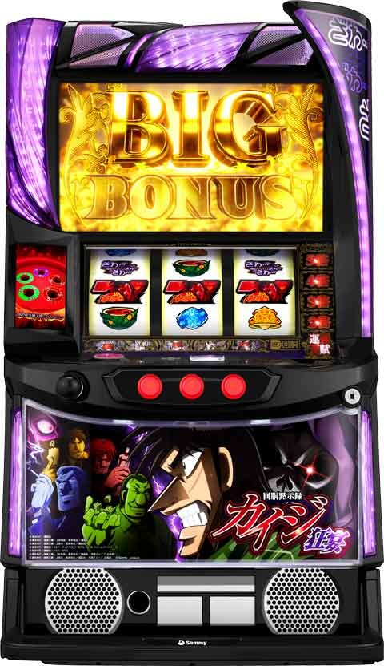
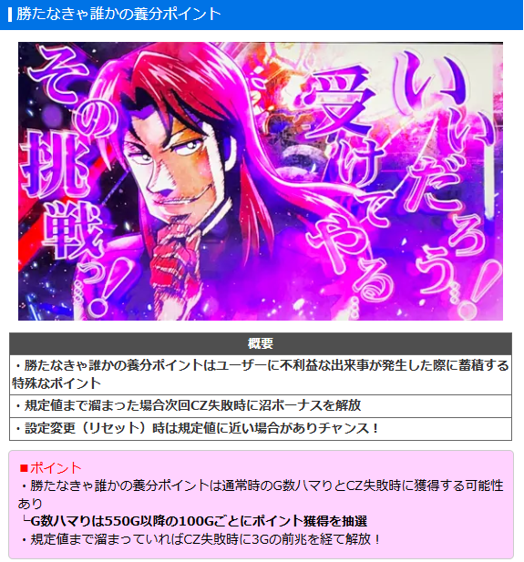
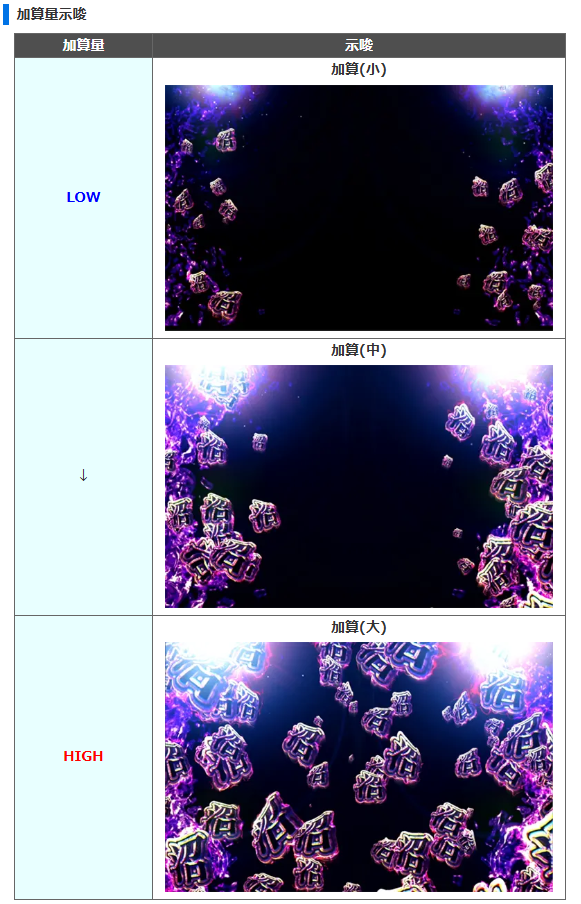
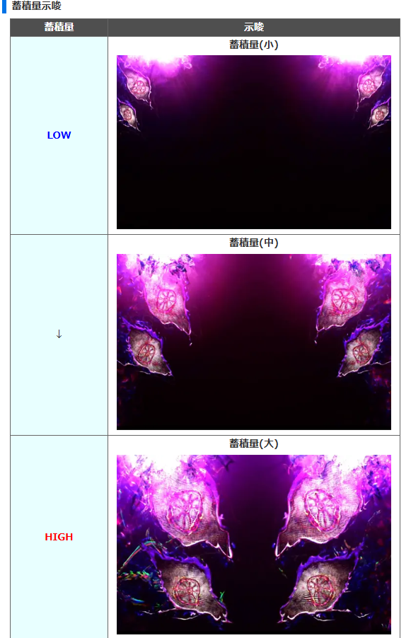
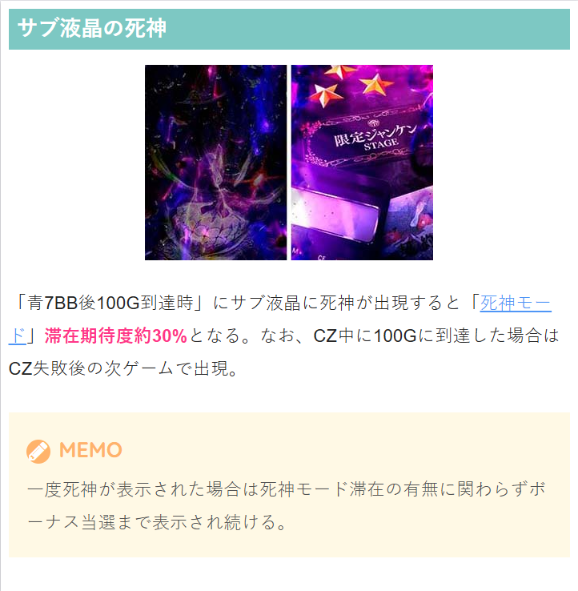
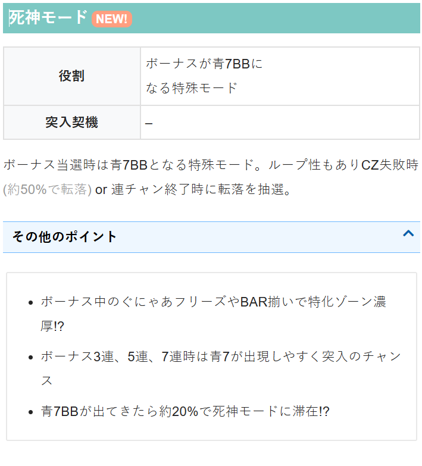
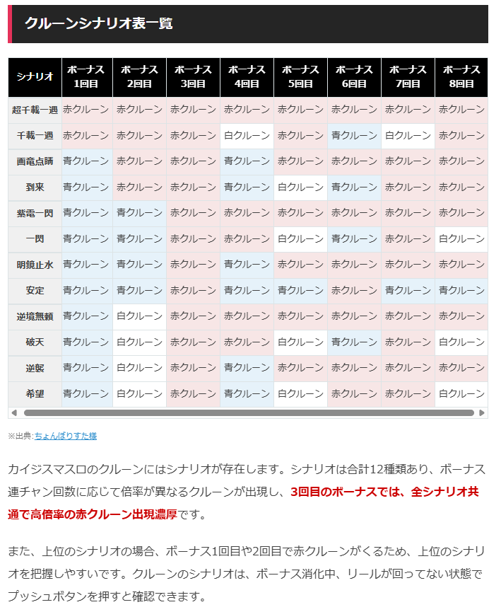
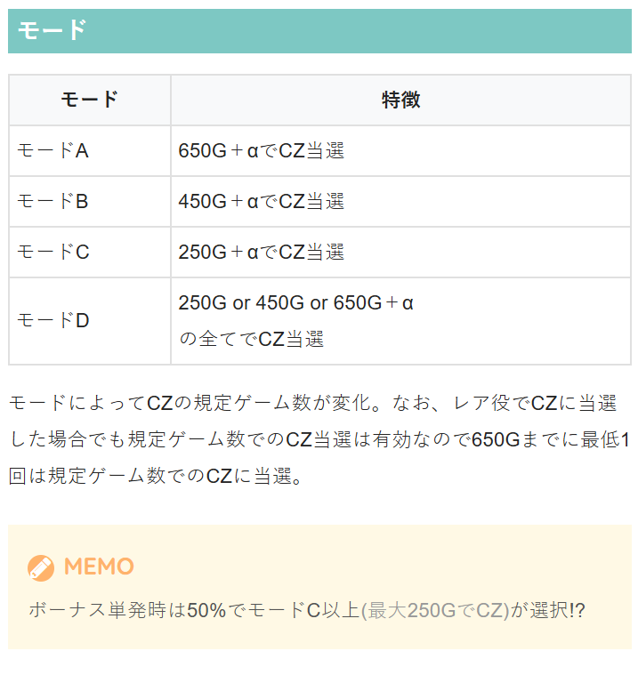
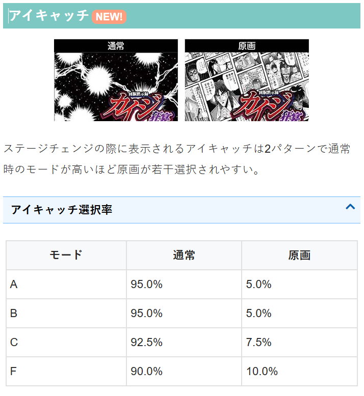

L回胴黙示録カイジ 狂宴

【天井情報】
1000G+α 天井到達時は利根川RUSHを経由してボーナスへ。 「朝イチリセット時」と「沼最終決戦失敗時」は800Gに短縮される。
【リセット判別】
不明。リセット時にゲーム数の内部加算あり。
【有利区間について】
差枚等で有利区間リセット時はCZ＋クルーンシナリオの(超)千載一遇へ移行!? エンディング発生＝有利区間リセットとなる。
エンディングを経由せず有利区間がリセットされる事もあるのでクルーンシナリオは要チェック。
有利区間切れ条件 不明。
狙い目
【リセット狙い】
310Gから
【AT間天井狙い】
駆け抜け後以外
積極派 430Gから 450GゾーンCZ非当選で続行
慎重派 500Gから
駆け抜け後 530Gから
沼ボーナス後 360Gから（履歴からは判断出来ない）
【駆け抜け後以外の攻めた天井狙いについて】
250/450/650のどこかでCZは必ず当選する。
駆け抜け後以外であれば250当選率が低い事を考慮して450ゾーンでCZ非当選ならそのまま天井狙い？
【ゾーン狙い】
・250ゾーン
駆け抜け後以外 230Gから
駆け抜け後 200Gから
・450ゾーン
駆け抜け後以外 430Gから
駆け抜け後 450Gから
【倍率点灯ランプ狙い】
倍率ランプ点灯している台を1-2G回して、ざわ高確に滞在していないか確認。
ざわ高確に非滞在ならやめ。
【勝たなきゃ誰かの養分ポイント】
蓄積量示唆大で解放まで。
※大が出ても次回CZで解放無しの報告有り。



【死神モード】
サブ液晶に死神が出現時（全体的に紫っぽくなってる）はCZ当選まで。
クルーンシナリオに死神が写っていれば滞在濃厚。
※前任者がCZ失敗を確認してやめられてる場合は打たない方が良い可能性あり。
※例えば、死神出現しているのに250ゾーン抜けでやめられてる台など。
CZ当選→失敗時でも400G以上ハマっていればボーナス当選まで。
250Gゾーン手前でCZ当選→失敗時は250ゾーン確認してやめ？
連チャン中、死神モード滞在濃厚時はCZ当選まで。（CZを失敗するまで転落しなそう）
死神モード濃厚でも連チャン中、最後にCZ失敗し連チャン抜けの場合は100Gでのサブ液晶で判断？
※死神モード濃厚とは、連チャン中青7が連続で続いている状態。


【有利区間切れ狙い】
有利切れのタイミングがわかりにくいため狙えなそう。
やめ時
ボーナス終了後の閃き前兆またはCZ消化し、倍率ランプ消灯かざわ高確終わったらやめ。
閃き後の「ざわ…」が出現すると高確滞在？その場合は「ざわ…」消えるまで。
その他
クルーンシナリオ

モード

アイキャッチ

参考元
基本情報
- メーカー: サミー
- 機械割: 97.8% 〜 111.2%
- 導入開始日: 2025年03月03日（月）
- ゲーム性概要: ●レア役・ゲーム数消化でざわ高確へ移行 ●ざわ高確→閃き前兆→CZ成功でボーナスに当選 ●CZで獲得した景品数でボーナス枚数が変化 ●ボーナスは純増約5.3枚/G、赤7BIG後は閃き前兆へ、青7BIG後はCZへ直行 ●トネガワラッシュ・ハンチョウラッシュ2種類の特化外伝あり ●沼ボーナスは3段クルーン突破で至福のクルーンジャッジ突入！


打ち方
打ち方・小役
打ち方（小役狙い）：左リールBAR狙い
「最初に狙う絵柄」 左リール上段付近にBARを狙う。目押しが必要なのは中リールのスイカのみなので、左リールスイカ停止時以外、中右リールはフリー打ちでOKだ。

「スイカ停止時」 中リールはBARを目安にスイカを狙う。

［スイカ中段停止］ スイカが中段までスベったら強チャンス目1確!?

「レア役の停止例」

打ち方（小役狙い）：左リール青7狙い
左リール枠内に青7が止まれば小役以上濃厚なので、小役がアツいCZ中などにオススメの打ち方だ。
「最初に狙う絵柄」 左リール上段付近に青7を狙う。

「青7上段停止時」 ベル以上濃厚。中リールにスイカを狙う。

「青7下段停止時」 リプレイorチェリー濃厚。リプレイが揃わなければチェリー。

「スイカ上段停止時」 強チャンス目1確!?

「ベル上段停止時」 基本的な停止形はこれ。リプレイや弱チャンス目の可能性あり。

変則押しはNG
通常時、押し順ナビなし時は左リール第1停止での消化を推奨する。

解析情報通常時
小役関連
レア役確率
| 設定 | スイカ | 弱チェリー | 弱 チャンス目 | 強 チェリー | 強 チャンス目 |
|---|---|---|---|---|---|
| 1 | 1/79.9 | 1/218.5 | 1/84.0 | 1/528.5 | 1/728.2 |
| 2 | 1/79.0 | 1/211.4 | 1/81.9 | 1/512.0 | 1/728.2 |
| 3 | 1/78.0 | 1/204.8 | 1/79.9 | 1/496.5 | 1/728.2 |
| 4 | 1/77.1 | 1/198.6 | 1/79.0 | 1/481.9 | 1/728.2 |
| 5 | 1/75.3 | 1/187.2 | 1/78.0 | 1/468.1 | 1/728.2 |
| 6 | 1/72.8 | 1/182.0 | 1/77.1 | 1/455.1 | 1/728.2 |
レア役合算確率
| 設定 | レア役合算 | 強レア役合算 |
|---|---|---|
| 1 | 1/31.0 | 1/306.2 |
| 2 | 1/30.4 | 1/300.6 |
| 3 | 1/29.8 | 1/295.2 |
| 4 | 1/29.3 | 1/290.0 |
| 5 | 1/28.6 | 1/284.9 |
| 6 | 1/28.0 | 1/280.1 |
※レア役合算にざわ揃いは含まない
小役揃い合算確率（設定1）
| 条件 | 確率 |
|---|---|
| CZ中のナビ抜き | 1/3.7 |
| CZ中のナビ込み | 1/2.8 |
ざわ高確中・閃き前兆当選率
| 役 | 当選率 |
|---|---|
| 2枚ベル | 約8% |
| ざわ揃い | 約60% |
| 弱レア役 | 約60% |
| 強レア役 | 100% |
内部状態関連
ざわ高確
レア役やゲーム数消化を契機に移行する、閃き前兆の高確状態。滞在中は液晶に「ざわ」の文字が出現する。

ざわ高確性能
| 項目 | 内容 |
|---|---|
| 移行契機 | レア役・ゲーム数消化時の抽選 |
| 閃き前兆期待度 | 約60% |
| 消化中の抽選 | 共通ベル・レア役で閃き前兆を抽選 |
ざわ高確移行に期待できるゲーム数
| 項目 | 内容 |
|---|---|
| ゲーム数 | 150G、250G、450G、650G |
| 備考 | サブ液晶のゲーム数表示の色が変わるとチャンス |
成立役ごとの閃き前兆当選期待度
| 役 | 期待度 |
|---|---|
| 共通ベル | 低 |
| ざわ揃い | ↓ |
| 弱レア役 | ↓ |
| 強レア役 | 高 |
レア役成立時・ざわ高確移行率
| 設定 | 弱レア役 | 強レア役 |
|---|---|---|
| 1 | 25.0% | 100% |
| 2 | 25.0% | 100% |
| 3 | 26.6% | 100% |
| 4 | 28.9% | 100% |
| 5 | 30.1% | 100% |
| 6 | 30.9% | 100% |
モード＆ゲーム数ごとのざわ高確移行率
| ゲーム数 | 通常A | 通常B | 通常C | 通常D |
|---|---|---|---|---|
| 150G | 100% | 100% | 100% | 100% |
| 250G | 100% | 100% | 100% | 100% |
| 350G | 10.2% | 10.2% | 10.2% | 10.2% |
| 450G | 30.1% | 100% | 30.1% | 100% |
| 550G | 10.2% | 10.2% | 10.2% | 10.2% |
| 650G | 100% | 33.6% | 33.6% | 100% |
| 750G | 5.1% | 5.1% | 5.1% | 5.1% |
| 850G | 5.1% | 5.1% | 5.1% | 5.1% |
| 950G | ー | ー | ー | ー |
ざわ高確移行時の保証ゲーム数
| 契機 | ゲーム数 |
|---|---|
| ゲーム数or弱レア役 | 15G |
| 強レア役 | 25G |
保証ゲーム数消化後は、レア役以外成立時に転落抽選がおこなわれる。
モード
通常モード特徴
| モード | 特徴 |
|---|---|
| 通常A | 650G到達時に必ずCZに当選 |
| 通常B | 450G到達時に必ずCZに当選 |
| 通常C | 250G到達時に必ずCZに当選 |
| 通常D | 250G、450G、650G到達時に必ずCZに当選 |
※AT天井は全モード共通で1000G（設定変更後などは800G）
通常時はA〜Dの4モードで、ゲーム数消化によるCZ当選期待度が変化（650Gまでに必ず一度はCZに当選）。この4モードとは別に裏レートモードや死神モードに移行する可能性もある。 各モードの規定ゲーム数到達時はざわ高確→閃き前兆を経由してCZに当選。自力でCZに当選した後も、滞在モードごとの規定ゲーム数到達時は必ずCZに当選する。
モード抽選のポイント
| 抽選タイミング | ポイント |
|---|---|
| 設定変更時 | 約40%で通常B以上 |
| ボーナス単発後 | 約50%で通常C以上 |
| 連チャン終了後 | モード移行率に設定差あり |
※連チャン…ボーナス後、50G＋ざわ高確終了まで
ボーナス単発後は、自力での当選も含めると、約78%で250GにCZに当選する。
裏レートモード＆死神モード（特殊モード）
出玉性能に直結する2種類の特殊モードが存在。裏レートモード中はレートがアップしやすく、死神モード中はボーナス当選で青7BIG濃厚になる。
裏レートモードと死神モード
| モード | 特徴 |
|---|---|
| 裏レートモード | ● 周期ゲーム数到達時にレートアップが発生しやすい |
| 死神モード | ● ボーナス当選時に必ず青7BIGに当選 ● CZ失敗時or連チャン失敗時の転落抽選（CZ失敗時は50%で転落） ● 設定変更時は突入のチャンス |
特殊モード抽選の特徴
| 項目 | 特徴 |
|---|---|
| 設定変更時 | 死神モードのチャンス |
| 連チャンの定義 | 50G+α経過かつざわ高確終了時 |
モード＆消化ゲーム数ごとのざわ高確移行期待度
| ゲーム数 | 通常A | 通常B | 通常C | 通常D |
|---|---|---|---|---|
| 150G | ◎ | ◎ | ◎ | ◎ |
| 250G | ◎ | ◎ | ☆ | ☆ |
| 350G | △ | △ | △ | △ |
| 450G | ○ | ☆ | ○ | ☆ |
| 550G | △ | △ | △ | △ |
| 650G | ☆ | ○ | ○ | ☆ |
| 750G | △ | △ | △ | △ |
| 850G | △ | △ | △ | △ |
| 950G | × | × | × | × |
※期待度…×＜△＜◯＜◎＜☆
ゲーム数ごとの滞在ステージ割合
| ゲーム数 | 鉄骨渡り | 地下サイコロ | その他 |
|---|---|---|---|
| 150G | 100% | ー | ー |
| 250G | ー | 50.0% | 50.0% |
| 350G | 12.5% | 6.3% | 81.3% |
| 450G | 0.8% | 0.8% | 98.4% |
| 550G | 12.5% | 6.3% | 81.3% |
| 650G | 0.8% | 0.8% | 98.4% |
| 750G | 0.8% | 0.8% | 98.4% |
| 850G | 0.8% | 0.8% | 98.4% |
| 950G | 0.8% | 0.8% | 98.4% |
各ステージの滞在ゲーム数は30〜50G。ステージ移行のメインはゲーム数消化だが、その他の契機で地下サイコロステージへ移行することもある。
［裏レートモード以外］レートアップ発生率
| ゲーム数 | 非当選 | 1段階アップ | 2段階アップ |
|---|---|---|---|
| 150G | 75.0% | 23.4% | 1.6% |
| 250G | 75.0% | 23.4% | 1.6% |
| 350G | 50.0% | 46.9% | 3.1% |
| 450G | 80.1% | 19.1% | 0.8% |
| 550G | 80.1% | 19.1% | 0.8% |
| 650G | 80.1% | 19.1% | 0.8% |
| 750G | 80.1% | 19.1% | 0.8% |
| 850G | 80.1% | 19.1% | 0.8% |
| 950G | 80.1% | 19.1% | 0.8% |
［裏レートモード］レートアップ発生率
| ゲーム数 | 非当選 | 1段階アップ | 2段階アップ |
|---|---|---|---|
| 150G | ー | 各50.0% | 各50.0% |
| 250G | ー | 各50.0% | 各50.0% |
| 350G | ー | 各50.0% | 各50.0% |
| 450G | ー | 各50.0% | 各50.0% |
| 550G | ー | 各50.0% | 各50.0% |
| 650G | ー | 各50.0% | 各50.0% |
| 750G | ー | 各50.0% | 各50.0% |
| 850G | ー | 各50.0% | 各50.0% |
| 950G | ー | 各50.0% | 各50.0% |
裏レートモード中は規定ゲーム数到達ごとにレートアップが発生。レートはざわ高確終了時・閃き前兆終了時・CZ失敗時の98.4%でダウンするが、連チャン中（ボーナス後、50G＋ざわ高確終了）は保持される。
ボーナス初当り時・裏レートモード移行率
| 滞在モード | 移行率 |
|---|---|
| 非裏レートモード | 0.4% |
| 裏レートモード（モードループ率） | 75.0% |
レートの転落率
| 抽選タイミング | 転落率 |
|---|---|
| ざわ高確終了時 | 98.4% |
| 閃き前兆終了時 | 98.4% |
| CZ失敗時 | 98.4% |
一度裏レートモードに入れば、高確〜CZの流れを失敗しない限り、約75%でループする。
死神モード移行率
| 抽選タイミング | 移行率 |
|---|---|
| 設定変更時 | 約20% |
| 青7ボーナス当選時 | 約20% |
| 有利区間リセット時 | 約20% |
死神モードからの転落率
| 抽選タイミング | 転落率 |
|---|---|
| CZ失敗時 | 約50% |
| 連チャン終了時 | 調査中 |
※連チャン…ボーナス後、50G＋ざわ高確終了まで
設定変更時＆ボーナス単発後のモード振り分け
| 移行先 | 設定変更時 | ボーナス単発後 |
|---|---|---|
| 通常A | 60.2% | 43.8% |
| 通常B | 9.4% | 6.3% |
| 通常C | 27.3% | 48.4% |
| 通常D | 3.1% | 1.6% |
ボーナス単発後は約1/2で通常Cor通常Dへ移行。通常Cは250G到達時に、通常Dは250G、450G、650G到達時にCZに当選する（閃き前兆当選までざわ高確が継続）ので、単発後にヤメてある台は狙い目といえる。
連チャン後のモード振り分け
※ボーナス後、50G＋ざわ高確終了までが連チャン扱い
閃き前兆
閃き前兆概要
CZ当選のメインとなる状態。名称は前兆となっているが自力要素も強く、 成立役に応じてエピソードレベルがアップ （枠色昇格）するほど、CZ本前兆期待度が高まる仕組みだ。最終的に発生する連続演出に成功すればCZへ突入。 通常時（ざわ高確経由）以外に、赤7BIG終了後も基本的には閃き前兆からスタートする。

閃き前兆性能
| 項目 | 内容 |
|---|---|
| 移行契機 | ざわ高確中の抽選、赤7BIG後 |
| 消化中の抽選 | 成立役に応じてエピソードがアップするほど、 CZの当選期待度がアップ |
共通ベル＜ざわ揃い＜弱レア役＜強レア役の順に、エピソードレベルアップに期待できる。
「エピソードレベルアップ」 青＜黄＜緑＜赤＜金の順にCZ当選期待度がアップ。

エピソードレベルごとのCZ当選期待度（設定1）
| エピソード（枠色） | 期待度 |
|---|---|
| エピソード1（青） | 約15% |
| エピソード2（黄） | 約30% |
| エピソード3（緑） | 約50% |
| エピソード4（赤） | 約85% |
| エピソード5（金） | 100% |
| SPエピソード1（紫） | 100% （特化外伝期待度アップ） |
| SPエピソード2（紫） | 100% （特化外伝期待度アップ） |
［SPエピソード］ エピソードレベルがアップしたタイミングでSPエピソードが発生する可能性あり。発生した時点でCZ以上濃厚かつ、特化外伝当選の期待度がアップする。 SPエピソード1発生後、SPエピソード2も発生した場合は特化外伝濃厚だ。

閃き前兆継続ゲーム数振り分け
| 前兆 | 確定前兆以外 | 確定前兆 |
|---|---|---|
| 15G | ー | 2.0% |
| 16G | ー | 2.0% |
| 17G | 19.5% | 19.5% |
| 18G | 19.5% | 19.5% |
| 19G | 18.8% | 16.8% |
| 20G | 18.8% | 16.8% |
| 21G | 9.4% | 9.4% |
| 22G | 9.4% | 9.4% |
| 23G | 4.7% | 4.7% |
閃き前兆が15G・16Gで終了した場合はCZ濃厚。カイジシルエット演出発生から5G以内に連続演出へ発展するのが基本パターンとなる。
［カイジシルエット演出］

エピソードレベルアップ率
現在のエピソードレベルによって、レベルアップ期待度が変化。閃き前兆開始時は必ずレベル1（青）から始まるが、内部的にはレベル2以上でスタートするパターンもアリ。 内部的に2レベルアップした場合でも、見た目の色は1段階ずつ昇格する。
エピソードレベルアップ率 エピソードレベル1（青）
| 役 | 非当選 | 1レベルアップ | 2レベルアップ |
|---|---|---|---|
| 2枚ベル | 75.0% | 25.0% | ー |
| ざわ揃い | ー | 98.4% | 1.6% |
| 弱レア役 | ー | 98.4% | 1.6% |
| 強レア役 | ー | 89.8% | 10.2% |
エピソードレベル2（黄）
| 役 | 非当選 | 1レベルアップ | 2レベルアップ |
|---|---|---|---|
| 2枚ベル | 84.8% | 15.2% | ー |
| ざわ揃い | 12.5% | 86.7% | 0.8% |
| 弱レア役 | 12.5% | 86.7% | 0.8% |
| 強レア役 | ー | 97.7% | 2.3% |
エピソードレベル3（緑）
| 役 | 非当選 | 1レベルアップ | 2レベルアップ |
|---|---|---|---|
| 2枚ベル | 87.5% | 12.5% | ー |
| ざわ揃い | 37.5% | 62.5% | ー |
| 弱レア役 | 37.5% | 62.5% | ー |
| 強レア役 | ー | 97.7% | 2.3% |
エピソードレベル4（赤）
| 役 | 非当選 | 1レベルアップ | 2レベルアップ |
|---|---|---|---|
| 2枚ベル | 90.6% | 9.4% | ー |
| ざわ揃い | 37.5% | 62.5% | ー |
| 弱レア役 | 37.5% | 62.5% | ー |
| 強レア役 | ー | 97.7% | 2.3% |
連続演出中の抽選
連続演出突入時のエピソードレベルを参照して、CZの当否を抽選。CZ非当選時は連続演出中の成立役に応じてCZへの書き換えを抽選、CZに当選していた場合はレートアップが抽選される。
［CZ非当選時］CZへの書き換え当選率
| 役 | 当選率 |
|---|---|
| ざわ揃い | 12.5% |
| 弱レア役 | 12.5% |
| 強レア役 | 100% |
［CZ当選時］レートアップ当選率
| 役 | 非当選 | 1段階アップ | 2段階アップ |
|---|---|---|---|
| ざわ揃い | 90.6% | 9.0% | 0.4% |
| 弱レア役 | 90.6% | 9.0% | 0.4% |
| 強レア役 | ー | 97.7% | 2.3% |
運否天賦（CZ）
CZ概要
ボーナスをかけたチャンスゾーン。限定ジャンケン・ワンポーカー・Eカード・地下サイコロの4種類がある（滞在ステージと発生するCZは対応している）。いずれも2G/セットでバトルが展開していき、勝利するごとに景品を獲得、敗北すると景品がなくなっていく。この流れを繰り返し、 景品を6セット獲得できればボーナス当選 、景品が0になるとCZが終了する。

CZ性能
| 項目 | 内容 |
|---|---|
| 移行契機 | 閃き前兆中の抽選、青7BIG後 |
| 通常時のCZ確率 | 1/243.3（設定1） |
| ボーナス期待度 | 60%以上 |
| 消化中の抽選 | 2G/セットのバトルを繰り返し、 景品を6セット獲得すれば勝利 |
| その他 | ボーナス当選時の約33%で特化ゾーンへ突入、 10G消化ごとに押し順ナビを獲得、 レア役後はナビ発生のチャンス |
| 天井 | 1回のCZ中、最大26回目のバトルが天井 |
CZ種別ごとの期待度と特徴
| CZ | 期待度 | 特徴 |
|---|---|---|
| 限定ジャンケン | 約60% | ー |
| ワンポーカー | 約60% | ー |
| Eカード | 約82% | もっとも期待度が高い |
| 地下サイコロ | 約60% | 成功時は特化ゾーン濃厚 |
「レート告知」 CZ開始時に1～5倍のレートを決定して、レートが高いほど勝利時に多くの景品を獲得可能。ボーナス開始時にCZで獲得した景品をボーナス枚数に変換するので、 高いレートで勝利すればボーナス枚数も多くなる 。

「バトル勝利で景品を獲得」
レートごとの1セットの景品数と勝利時のトータル景品数
| レート | 1セットあたり | 勝利時のトータル |
|---|---|---|
| 1倍 | 1個 | 6個 |
| 2倍 | 2個 | 12個 |
| 3倍 | 3個 | 18個 |
| 4倍 | 4個 | 24個 |
| 5倍 | 5個 | 30個 |
※レートが5倍の場合、1勝ごとに景品を5個ずつ獲得。6セットが勝利条件なので、勝利時のトータル景品数は30個
3セットの景品を持った状態からCZがスタート。バトル勝利で景品を獲得、敗北すると景品が失われ、6セットを獲得できればボーナス当選となる。1セットごとの景品数はレート1倍時は景品が1個ずつ、5倍の場合は5個ずつになるため、5倍のレートで勝利（ボーナス当選）すれば30個の景品を獲得することができる。
「バトル1G目」 1Gの小役で次ゲームの期待度を決定。基本的には小役が入賞すれば期待度の高い展開が選ばれやすい。

「バトル2G目」 1G目で決定した期待度でバトルが発生。勝利抽選は成立役を参照しておこなわれ、ハズレは低期待度、小役入賞はチャンスとなる。1G目で小役を引いていれば、2G目がハズレでも勝利期待度が高くなりやすいので、ヒキがかなり重要だ。

対戦相手抽選＆勝利抽選
1G目の成立役を参照して、2G目の勝利期待度を決定する。1G目がレア役だった場合、2G目の成立役不問で勝利（景品獲得）濃厚だ。
［限定ジャンケン1G目］対戦相手振り分け
| 対戦相手 | ハズレ | 小役揃い | 弱レア役 | 強レア役 |
|---|---|---|---|---|
| 船井 | 71.9% | ー | 0.5% | 5.5% |
| 北見 | 27.0% | 89.1% | 0.4% | 4.4% |
| メガネ | 1.2% | 10.9% | 99.0% | 90.2% |
※1G目がレア役の場合、2G目の成立役不問で景品獲得濃厚
［限定ジャンケン2G目］勝利期待度表示
| 対戦相手 | ハズレ | 小役 |
|---|---|---|
| 船井 | 10% | 68% |
| 北見 | 54% | 89% |
| メガネ | 89% | 100% |
［ワンポーカー1G目］カード振り分け
| カード | ハズレ | 小役揃い | 弱レア役 | 強レア役 |
|---|---|---|---|---|
| 3 | 44.5% | ー | ー | ー |
| 5 | 27.3% | ー | ー | ー |
| 8 | 18.8% | 57.9% | ー | ー |
| 10 | 6.3% | 23.4% | ー | ー |
| J | 1.9% | 7.9% | ー | ー |
| Q | 0.8% | 8.5% | ー | ー |
| K | 0.4% | 1.9% | 91.0% | ー |
| A | ー | 0.4% | 9.0% | 100% |
※1G目がレア役の場合、2G目の成立役不問で景品獲得濃厚
［ワンポーカー2G目］勝利期待度表示
| カード | ハズレ | 小役 |
|---|---|---|
| 3 | 5% | 64% |
| 5 | 14% | 75% |
| 8 | 50% | 85% |
| 10 | 64% | 100% |
| J | 75% | 100% |
| Ｑ | 89% | 100% |
| K | 100% | 100% |
| A | 100% | 100% |
［Eカード1G目］対戦相手振り分け
| カード | ハズレ | 小役揃い | 弱レア役 | 強レア役 |
|---|---|---|---|---|
| 奴隷 | 70.3% | ー | ー | ー |
| 皇帝 | 29.7% | 100% | 100% | 100% |
※1G目がレア役の場合、2G目の成立役不問で景品獲得濃厚
［Eカード2G目］勝利期待度表示
| カード | ハズレ | 小役 |
|---|---|---|
| 奴隷 | 15% | 75% |
| 皇帝 | 75% | 100% |
［地下サイコロ1G目］カード振り分け
| サイコロの目 | ハズレ | 小役揃い | 弱レア役 | 強レア役 |
|---|---|---|---|---|
| 5 | 44.5% | ー | ー | ー |
| 4 | 27.4% | ー | ー | ー |
| 3 | 26.9% | 88.9% | ー | ー |
| 2 | 1.2% | 10.5% | 89.9% | ー |
| 1 | 0.0% | 0.5% | 10.1% | 100% |
※1G目がレア役の場合、2G目の成立役不問で景品獲得濃厚
［地下サイコロ］2G目の勝利期待度表示
| サイコロ | ハズレ | 小役 |
|---|---|---|
| 5 | 5% | 64% |
| 4 | 14% | 75% |
| 3 | 55% | 89% |
| 2 | 89% | 100% |
| 1 | 100% | 100% |
ベルナビストック当選率
バトル1・2G目ともに、成立役を参照してベルナビ獲得を抽選。1G目での抽選に当選した場合、各CZ内でもっとも勝利期待度の高い対戦が選ばれる。 ストック当選時は、バトル1G目は2個、2G目は1or2個を獲得。10Gごとの抽選では1〜4個のベルナビを獲得する。
［バトル1G目］ベルナビストック当選率
| 役 | Eカード以外 | Eカード |
|---|---|---|
| ハズレ | ー | 0.4% |
| ベル・リプレイ | 0.4% | 0.4% |
| ざわ揃い | 6.3% | 15.2% |
| 弱レア役 | 9.4% | 15.2% |
| 強レア役 | 100% | 100% |
※当選時はベルナビを2個ストック
［バトル2G目］ベルナビストック当選率
| 役 | ナビ1個 | ナビ2個 |
|---|---|---|
| ざわ揃い | 11.7% | 0.8% |
| 弱レア役 | 23.4% | 1.6% |
| 強レア役 | ー | 100% |
［10G消化ごと］ベルナビストック個数振り分け
| 個数 | 振り分け |
|---|---|
| ナビ1個 | 97.7% |
| ナビ2個 | 1.6% |
| ナビ3個 | 0.4% |
| ナビ4個 | 0.4% |
「小役確率上昇中帯でストックあり」 帯出現時は、ベルナビを2個以上ストックしていることが濃厚となる。

一撃勝利当選率
| 契機 | 当選率 |
|---|---|
| バトル2G目の弱レア役 | 0.4% |
| バトル2G目の強レア役 | 約10% |
| 最大26バトル経過 | 100% （天井） |
景品6セット獲得時以外に、上記の条件で一撃勝利することもある。
天啓の閃き
天啓の閃き概要
CZ成功時の一部で突入する、景品の特化ゾーン。成立役に応じた景品の獲得抽選がおこなわれるほか、ぐにゃあフリーズが発生して、天啓の閃き自体のゲーム数が加算されることもある。

天啓の閃き性能
| 項目 | 内容 |
|---|---|
| 移行契機 | CZ成功時の一部 |
| 継続ゲーム数 | 7G＋α |
| 消化中の抽選 | 成立役に応じて景品を獲得、 ぐにゃあフリーズ発生で天啓の閃きのゲーム数加算 |
「景品獲得」 CZ中のレートに応じた景品数を獲得する。

「天啓の閃きゲーム数加算」

ゲーム数加算＆景品獲得抽選
天啓の閃き中は成立役に応じて、ゲーム数加算→景品獲得の順に抽選。ゲーム数加算当選時はレート×1倍の景品も同時に獲得する。 また、開始時にベルナビ1個を持ってスタートし、ナビ消化後は押し順ベル成立時の3.5%でナビが発生する。
ゲーム数加算当選率 初回上乗せ時
| 役 | ＋5G | ＋10G |
|---|---|---|
| リプレイ | 51.6% | 14.1% |
| ベル | 26.6% | 7.8% |
| ざわ揃い | ー | 100% |
| 弱レア役 | ー | 100% |
| 強レア役 | ー | 100% |
2回目以降の上乗せ時
| 役 | ＋5G | ＋10G |
|---|---|---|
| リプレイ | ー | ー |
| ベル | 0.4% | ー |
| ざわ揃い | 9.4% | ー |
| 弱レア役 | 9.4% | 9.4% |
| 強レア役 | ー | 100% |
ゲーム数加算当選時はレート×1倍の景品も獲得する。
景品獲得当選率
| 役 | レート×1倍 | レート×2倍 | レート×3倍 |
|---|---|---|---|
| リプレイ | 99.2% | 0.4% | 0.4% |
| ベル | 99.2% | 0.4% | 0.4% |
| ざわ揃い | ー | 93.8% | 6.3% |
| 弱レア役 | 90.6% | 7.8% | 1.6% |
強レア役はゲーム数加算に加え、レート分の景品を獲得する。
リプレイ成立時のざわ揃い変換当選率
| 役 | 当選率 |
|---|---|
| リプレイ | 1.6% |
押し順ベル成立時の押し順ナビ発生率
| 役 | 当選率 |
|---|---|
| 押し順ベル | 3.5% |
全プッシュ
全プッシュ概要
天啓の閃きと同様、CZ成功時の一部で突入。2G/セットの特化ゾーンで、PUSHボタンを押して当たりが出ると次のセットへ継続となる。セット継続のたびにCZで獲得した景品数が上乗せされる（2倍なら12個ずつ、3倍なら18個ずつなど）。

全プッシュ性能
| 項目 | 内容 |
|---|---|
| 移行契機 | CZ成功時の一部 |
| 継続ゲーム数 | 2G/セット |
| 消化中の抽選 | 小役を引いて当たりくじが出れば、 レートに応じた数の景品を獲得 |
「当たりが出れば景品獲得」

セット継続抽選
1G目は成立役に応じて継続ストックの獲得を抽選し、2G目で小役を引けば必ず継続（景品獲得）。ストックがある場合、2G目は成立役不問でストックは使用されるが、低確率ながらリプレイやベルを引けばストックを獲得できる可能性がある。レア役はストックの有無不問でストック獲得のチャンスだ。
［1G目］継続ストック当選率
| 役 | 当選率 |
|---|---|
| リプレイ | 30.1% |
| ベル | 30.1% |
| 弱レア役 | 50.0% |
| 強レア役 | 100% |
［2G目・継続ストックあり］継続ストック当選率
| 役 | 継続のみ | 継続＆ストック＋1 |
|---|---|---|
| リプレイ | 99.6% | 0.4% |
| ベル | 99.6% | 0.4% |
| 弱レア役 | 90.6% | 9.4% |
| 強レア役 | − | 100% |
［2G目・継続ストックなし］継続ストック当選率
| 役 | 継続のみ | 継続＆ストック＋1 |
|---|---|---|
| リプレイ | 100% | ー |
| ベル | 100% | ー |
| 弱レア役 | 90.6% | 9.4% |
| 強レア役 | ー | 100% |
勝たなきゃ誰かの養分ポイント
勝たなきゃ誰かの養分ポイント概要
プレイヤーにとって不利なことが起こると、内部的にポイントを蓄積。一定量到達後のCZ失敗時にポイントが解放され沼ボーナスに突入する。

勝たなきゃ誰かの養分ポイント性能
| 項目 | 内容 |
|---|---|
| 獲得契機 | ● 有利区間移行時に初期ポイントを獲得 ● ゲーム数ハマリ時（550G以降、100G消化ごと） ● CZ失敗時 |
| 発動タイミング | ● ポイントMAXでのCZ失敗後、3Gの前兆を経由して沼ボーナスが発動 |
有利区間移行時に初期ポイントを抽選。大量ポイントを持って始まるケースもあるため、朝イチはチャンスだ。
直撃抽選
ざわ高確中・閃き前兆当選時のトネガワラッシュ当選率
ざわ高確中、閃き前兆当選時の一部でトネガワラッシュに直撃する可能性がある。
演出動画
3段クルーン→至福のクルーンジャッジ
沼ボーナス終了後は3段クルーンへ。ボーナス中に獲得した玉1個ずつクルーンの突破抽選をおこない、3段目を突破できれば至福のクルーンジャッジへ突入する。
解析情報ボーナス時
変換チャンス
変換チャンス概要
ボーナス開始時は、CZで獲得した景品を変換チャンス（1G完結）でボーナス枚数に変換。景品1セットにつき、10〜500枚に変換される。 1G間ではあるが、レア役を引けばボーナス枚数が2倍になる倍プッシュ発動のチャンスだ。


レア役成立時・倍プッシュ当選率
| 役 | 当選率 |
|---|---|
| 弱レア役 | 5.1% |
| 強レア役 | 50.0% |
［倍プッシュ］

BIGボーナス
BIGボーナス概要
純増約5.3枚/Gの擬似ボーナス。ボーナス中はレア役やざわ揃いで閃き前兆のエピソードレベルアップ抽選や、クルーン穴（CZのレート）のレベルアップ抽選がおこなわれる。赤7BIG終了後は閃き前兆以上へ、青7BIG終了後はCZ以上濃厚だ。 BAR揃いやぐにゃあフリーズによるCZ直撃抽選や特化ゾーン抽選もある。

BIGボーナス性能
| 項目 | 内容 |
|---|---|
| 移行契機 | CZ成功後 |
| 枚数 | 変換チャンスで決定 |
| 1Gあたりの純増 | 約5.3枚 |
| 消化中の抽選 | 閃き前兆のエピソードレベルアップ抽選、 クルーン穴レベルアップ抽選、 BAR揃い時はCZ or 特化ゾーン濃厚 |
「エピソードレベル」 液晶右下のカードの色で、ボーナス後に突入するざわ前兆の初期エピソードレベルが示唆される。

「狙えカットイン」 BARが揃えばCZ or 特化ゾーン！

「クルーンジャッジ」 ボーナス中はサブ液晶にクルーンと倍率が表示されていて、ボーナス終了後のクルーンジャッジで次回CZのレートを決定。クルーンのパターンはシナリオ管理となっている。 ボーナス後の閃き前兆でCZに当選しなかった場合、決まったレートは連チャン終了まで引き継がれるため、高レートが選ばれた場合は即ヤメ厳禁だ。

クルーンシナリオ
ボーナス後のクルーンジャッジで使用するクルーンの色は、白＜青＜赤の順に高レートの穴が出現しやすい。クルーンの色はシナリオ管理で、シナリオはボーナス中にPUSHボタンを押すと確認できる。

クルーン色ごとのクルーンレベル振り分け
| クルーンレベル | クルーン：白 | クルーン：青 | クルーン：赤 |
|---|---|---|---|
| レベル1 | 80.9% | ー | ー |
| レベル2 | 12.5% | ー | ー |
| レベル3 | 5.1% | ー | ー |
| レベル4 | 1.6% | ー | ー |
| レベル5 | ー | 84.4% | ー |
| レベル6 | ー | 9.4% | ー |
| レベル7 | ー | 4.7% | ー |
| レベル8 | ー | 1.6% | ー |
| レベル9 | ー | ー | 79.7% |
| レベル10 | ー | ー | 12.5% |
| レベル11 | ー | ー | 6.3% |
| レベル12 | ー | ー | 1.6% |
レベルは全15段階だが、初期振り分けではレベル1〜12から抽選。レベル13〜15はボーナス中の昇格で移行する可能性がある。
クルーンレベルごとの初期レート
| クルーンレベル | 左下 | 左上 | 上 | 右上 | 右下 |
|---|---|---|---|---|---|
| レベル1 | 1倍 | 1倍 | 2倍 | 2倍 | 3倍 |
| レベル2 | 1倍 | 2倍 | 2倍 | 2倍 | 3倍 |
| レベル3 | 1倍 | 2倍 | 3倍 | 3倍 | 3倍 |
| レベル4 | 1倍 | 2倍 | 3倍 | 4倍 | 4倍 |
| レベル5 | 2倍 | 2倍 | 3倍 | 4倍 | 4倍 |
| レベル6 | 2倍 | 2倍 | 3倍 | 4倍 | 5倍 |
| レベル7 | 2倍 | 3倍 | 3倍 | 4倍 | 5倍 |
| レベル8 | 2倍 | 3倍 | 3倍 | 5倍 | 5倍 |
| レベル9 | 3倍 | 3倍 | 3倍 | 5倍 | 5倍 |
| レベル10 | 3倍 | 3倍 | 4倍 | 5倍 | 5倍 |
| レベル11 | 3倍 | 4倍 | 4倍 | 5倍 | 5倍 |
| レベル12 | 4倍 | 4倍 | 4倍 | 5倍 | 5倍 |
| レベル13 | 4倍 | 4倍 | 5倍 | 5倍 | 5倍 |
| レベル14 | 4倍 | 5倍 | 5倍 | 5倍 | 5倍 |
| レベル15 | 5倍 | 5倍 | 5倍 | 5倍 | 5倍 |
［クルーン］ ボーナス中にクルーンレベルの昇格が抽選される。

青7BIGの出現率
3・7連目のボーナスは青7BIGのチャンス。 5連目は約50%で青7BIGが出現する。

BAR揃い時の恩恵抽選

BAR揃い確率
| 設定 | 確率 |
|---|---|
| 全設定共通 | 約1/370 |
BAR揃い状況ごとの恩恵
| 状況 | 恩恵 |
|---|---|
| 運否天賦獲得前 | CZ以上 |
| 運否天賦獲得後 | トネガワラッシュ以上 |
| トネガワラッシュ獲得後 | ハンチョウラッシュ |
BAR揃いの回数が多いほど、強力な恩恵を獲得できる。
ボーナス中のエピソードレベルアップ率 エピソードレベル0
| 役 | 非当選 | 1レベルアップ | 2レベルアップ |
|---|---|---|---|
| ざわ揃い | ー | 90.6% | 9.4% |
| 弱レア役 | 50.0% | 46.9% | 3.1% |
| 強レア役 | ー | ー | 100% |
エピソードレベル1
| 役 | 非当選 | 1レベルアップ | 2レベルアップ |
|---|---|---|---|
| ざわ揃い | 25.0% | 70.3% | 4.7% |
| 弱レア役 | 69.9% | 28.5% | 1.6% |
| 強レア役 | ー | 87.5% | 12.5% |
エピソードレベル2
| 役 | 非当選 | 1レベルアップ | 2レベルアップ |
|---|---|---|---|
| ざわ揃い | 37.5% | 62.5% | ー |
| 弱レア役 | 84.8% | 15.2% | ー |
| 強レア役 | ー | 97.7% | 2.3% |
エピソードレベル3
| 役 | 非当選 | 1レベルアップ | 2レベルアップ |
|---|---|---|---|
| ざわ揃い | 69.9% | 30.1% | ー |
| 弱レア役 | 87.5% | 12.5% | ー |
| 強レア役 | ー | 100% | ー |
エピソードレベル4
| 役 | 非当選 | 1レベルアップ | 2レベルアップ |
|---|---|---|---|
| ざわ揃い | 80.1% | 19.9% | ー |
| 弱レア役 | 94.9% | 5.1% | ー |
| 強レア役 | ー | 100% | ー |
2段階アップしても、液晶上（右下のカードの色）は1段階しか上がらないことがある。
リプレイ成立時・ざわ揃い変換当選率
| エピソードレベル | 当選率 |
|---|---|
| レベル0 | 50.0% |
| レベル1 | 33.6% |
| レベル2 | 28.1% |
| レベル3 | 18.8% |
| レベル4 | 12.5% |
| レベル5以降 | 12.5% |
現在のエピソードレベルに応じて変換率が変化する。
クルーン穴の封印当選率
BIG中のレア役成立時に、クルーン穴の封印（下位レートの穴をふさぐ）抽選がおこなわれる。左下のクルーンから最大3個まで封印される可能性あり。

下位レートクルーンの封印当選率
| 役 | 当選率 |
|---|---|
| ざわ揃い | 1.6% |
| 弱レア役 | 3.1% |
| 強レア役 | 25.0% |
特化外伝
トネガワラッシュ概要
ボーナス中の一部などで突入する景品獲得の特化ゾーン。5GのST型となっていて、景品獲得で5Gが再セットされる。基本的にボーナス終了後に突入するので、獲得した景品は次のボーナス開始時に使用される。

トネガワラッシュ性能
| 項目 | 内容 |
|---|---|
| 移行契機 | 天井到達時、閃き前兆中の一部、 ボーナス中のBAR揃いの一部、 設定変更後の直撃抽選当選時 |
| 継続ゲーム数 | 5GのST型 |
| ループ率 | 約85% |
| 消化中の抽選 | 小役揃いで景品を獲得し、5Gを再セット |
| その他 | 突入時のレートが1倍だった場合、2倍に昇格 |
閃き前兆経由で特化外伝に当選した場合、トネガワラッシュ：ハンチョウラッシュの比率は約85%：約15%。
「景品獲得」 演出パターンで期待度が変化。最終的に会長が喜べば景品獲得！

ハンチョウラッシュ概要
トネガワラッシュの上位版。5GのST型・小役揃いで景品を獲得し5Gを再セットというゲーム性はトネガワラッシュと同じだが、ループ率が約92%と高い。

ハンチョウラッシュ性能
| 項目 | 内容 |
|---|---|
| 移行契機 | 閃き前兆の一部、ボーナス中のBAR揃いの一部 |
| 継続ゲーム数 | 5GのST型 |
| ループ率 | 約92% |
| 消化中の抽選 | 小役揃いで景品を獲得し、5Gを再セット |
| その他 | 突入時のレートが1倍だった場合、2倍に昇格 |
閃き前兆経由の場合、ハンチョウラッシュ：トネガワラッシュの当選比率は約15%：約85%となる。
「ハンチョウのアクションに注目」 ハンチョウたちが歌うオリジナル楽曲も搭載されている。


ざわ揃い＆ベルナビ抽選
トネガワラッシュ・ハンチョウラッシュともに、突入時は2個のベルナビを持ってスタート。消化中のレア役成立時にベルナビストックを抽選する。 また、低確率だがリプレイ成立時はざわ揃いに変換される可能性もある。
ベルナビ抽選
トネガワラッシュ・ハンチョウラッシュともに、押し順ベル成立時にナビを出すかを抽選で決定。レア役成立時はレア役による景品獲得に加え、ベルナビストックも抽選される。
押し順ベル成立時・ベルナビ当選率
| 特化外伝 | 当選率 |
|---|---|
| トネガワラッシュ | 2.3% |
| ハンチョウラッシュ | 17.0% |
レア役成立時・ベルナビストック当選率
| 役 | ベルナビストック＋1 | ベルナビストック＋2 |
|---|---|---|
| ざわ揃い | 98.4% | 1.6% |
| 弱レア役 | 48.4% | 1.6% |
| 強レア役 | 50.0% | 50.0% |
レア役時のベルナビストック当選率はどちらの特化ゾーンも共通だ。
沼ボーナス
沼ボーナス概要
勝たなきゃ誰かの養分ポイントMAX契機で発動する特殊なボーナス。約250枚獲得可能で、消化中は成立役に応じて玉の獲得を抽選。獲得した玉を持って、ボーナス後の3段クルーン突破に挑む。3段クルーンの突破に成功すると、期待枚数2000枚超を誇る、至福のクルーンジャッジへ突入する。

沼ボーナス性能
| 項目 | 内容 |
|---|---|
| 移行契機 | 勝たなきゃ誰かの養分ポイントMAX時のCZ失敗後 |
| 獲得枚数 | 約250枚 |
| 消化中の抽選 | 成立役に応じて玉獲得を抽選（初期2個） |
| 終了後 | 3段クルーンへ |
「玉獲得」 レア役は玉獲得のチャンス！

3段クルーン
沼ボーナス中に集めた玉1個ずつ、クルーンの突破抽選がおこなわれるため、単純に多くの玉を持っているほど期待度がアップ。3つのクルーンすべてを突破できれば至福のクルーンジャッジ突入だ。

「クルーン突破」


様々なチャンスアップパターンが存在する。
至福のクルーンジャッジ
1Gずつ穴が移動していき、 小役を引いたクルーン穴に対応した倍率を獲得 。ボーナスの基礎枚数は100枚なので、3倍の穴なら300枚、5倍の穴なら500枚獲得となる。ボーナス中はクルーン穴のレベルアップが抽選される。 終了の穴で小役を引いてしまうと至福のクルーンジャッジ終了。初回は終了の穴がないので、必ず1回はボーナスを獲得できる。

至福のクルーンジャッジ性能
| 項目 | 内容 |
|---|---|
| 移行契機 | 3段クルーン突破後 |
| 消化中の抽選 | 1Gずつ穴がスライドしていき、 小役を引いた穴の倍率×100枚のボーナスを獲得 |
| 終了条件 | 終了のクルーンで小役を引く |
| ループ率 | 約90% |
| 期待枚数 | 2000枚超 |
「クルーンのパターン」

3段クルーン突破抽選
沼ボーナス中に集めた玉1個ずつ、クルーンの突破を抽選。レア役成立時は強制的に全クルーン突破（至福のクルーンジャッジ）へと書き換える抽選がおこなわれる。
玉1個あたりのクルーン突破率
| クルーン | 突破率 |
|---|---|
| 1段目 | 約50% |
| 2段目 | 約30% |
| 3段目 | 約20% |
レア役での全クルーン突破当選率
| 役 | 当選率 |
|---|---|
| 弱レア役 | 1.6% |
| 強レア役 | 50.0% |
玉獲得当選率
| 獲得個数 | ざわ揃い | 弱レア役 | 強レア役 |
|---|---|---|---|
| ＋1個 | 89.5% | 66.4% | ー |
| ＋2個 | 9.4% | 27.0% | ー |
| ＋3個 | 0.4% | 5.1% | 50.0% |
| ＋4個 | 0.4% | 1.2% | 37.5% |
| ＋5個 | 0.4% | 0.4% | 12.5% |
リプレイ成立時・ざわ揃い変換当選率
| 状況 | 当選率 |
|---|---|
| 玉獲得パート | 72.7% |
| 至福のクルーンジャッジ後 | 25.0% |
ざわ揃い・レア役成立で玉獲得濃厚。リプレイ成立時にざわ揃いへの変換が抽選されているので、初期個数（2個）のまま3段クルーンへ臨むケースはかなり少ない。
至福のクルーンジャッジ中の枚数加算当選率
ジャッジゲームでレア役を引いた場合、ボーナス枚数の加算を抽選。枚数加算に当選した場合、トータル枚数に当選した枚数が加算される（3倍時は300枚＋100枚で400枚）。
レア役成立時・枚数加算当選率
| 役 | ＋100枚 | ＋200枚 |
|---|---|---|
| 弱レア役 | 32.8% | 0.8% |
| 強レア役 | 75.0% | 25.0% |
終了穴の昇格抽選
ボーナス中（至福のクルーンジャッジ経由）は、次のジャッジでの終了穴を倍率穴に昇格させる抽選をおこなう。 終了穴が2つの時に当選すれば終了穴が1つに、終了穴が1つの時に当選すれば終了穴ナシ＝次回のボーナス濃厚になる。
倍率穴への昇格当選率
| 役 | 終了穴が2つの時 | 終了穴が1つの時 |
|---|---|---|
| ざわ揃い | 25.0% | 9.4% |
| 弱レア役 | 40.2% | 15.2% |
| 強レア役 | 100% | 100% |
ツラヌキ・有利区間
有利区間リセット時の恩恵
| No. | 恩恵 |
|---|---|
| 1 | CZ当選濃厚 |
| 2 | クルーンシナリオが（超）千載一遇 |
| 3 | 約20%で死神モードへ移行 |
初回のボーナス終了後は鉄骨渡りステージへ移行するのがデフォルト。その他のステージへ移行した場合は初回ボーナス後に有利区間が切れたことが濃厚となり、上記3つの恩恵をすべて得ることができる。
演出情報
通常時
ステージごとの示唆
| ステージ | 内容 |
|---|---|
| 限定ジャンケン | デフォルト |
| 17歩 | デフォルト |
| 鉄骨渡り | CZ当選時はEカード |
| 地下サイコロ | CZ当選時は地下サイコロ |
基本的に滞在ステージに対応したCZに発展するので、成功期待度の高いEカードや、成功で特化ゾーン濃厚の地下サイコロに対応するステージ滞在時はCZ当選に期待しよう。
［限定ジャンケン］

［17歩］

［鉄骨渡り］

［地下サイコロ］

ゲーム数表示の色変化法則
| パターン | 法則 |
|---|---|
| 250・450・650Gで赤 | モードによるCZ当選濃厚 |
| 350Gで緑 | 通常B以上の期待度アップ |
| 350Gで赤 | 裏レートモード濃厚 |
ゲーム数表示の色は黒がデフォルト（実戦上250・450・650Gのデフォルトは緑）で、青＜緑＜赤の順にCZ当選期待度がアップする。赤はCZ当選のゾーン到達濃厚、色変化のシナリオによって通常モードや裏レートモードを推測することもできるようだ。
［ゲーム数表示の色］

モードごとのCZ濃厚となるざわ高確移行ゲーム数
| モード | ゲーム数 |
|---|---|
| 通常A | 650G到達時 |
| 通常B | 450G到達時 |
| 通常C | 250G到達時 |
| 通常D | 250G、450G、650G到達時 |
滞在モードごとの規定ゲーム数到達時は、ざわ高確を経由してCZへ突入。例えば250G到達時にざわ高確→CZと移行した場合は通常Cor通常Dに滞在している可能性が高い。 レア役契機のざわ高確と被ることもあるので完璧な判別は難しいが、モード示唆演出やざわ高確中の挙動である程度は判断できる。
モード示唆演出
| 演出 | 示唆 | |
|---|---|---|
| アイキャッチ | 通常 | デフォルト |
| アイキャッチ | 特殊 | 上位モード期待度アップ |
| 会話演出 | 返答あり | 発生するほど 1番近いゾーンでのCZ期待度アップ |
| 会話演出 | 青文字の 返答（※） | 通常C以上濃厚 |
※1回目の返答時のみ、青文字が発生する可能性あり
特殊アイキャッチの発生率
| モード | 発生率 |
|---|---|
| 通常A | 5.00% |
| 通常B | 5.00% |
| 通常C | 7.50% |
| 通常D | 10.00% |
会話演出・青文字の返答の発生率
| モード | 発生率 |
|---|---|
| 通常C | 約20% |
| 通常D | 約25% |
［アイキャッチ：デフォルト］

［アイキャッチ：特殊］

演出法則
| 演出 | 法則 | |
|---|---|---|
| 色告知系 の演出 | 白 | 全役対応 |
| 色告知系 の演出 | 青 | リプレイ対応 |
| 色告知系 の演出 | 黄 | ベル対応 |
| 色告知系 の演出 | 緑 | スイカ対応 |
| 色告知系 の演出 | 赤 | チェリー対応 |
| 色告知系 の演出 | 紫 | ざわ揃い対応 |
| 色告知系 の演出 | 黒 | チャンス目対応 |
| 色告知系 の演出 | ヒョウ柄 | 全役対応（特化外伝当選） |
| 色告知系 の演出 | 虹 | 全役対応（特化外伝当選） |
| キャラ告知系の 演出 | 美心/会長 | レア役対応 |
| キャラ告知系の 演出 | ミレイ | チェリー対応 |
| キャラ告知系の 演出 | ユキノ | スイカ対応 |
| キャラ告知系の 演出 | その他のバニー | レア役対応 |
| キャラ告知系の 演出 | 遠藤 | レート示唆 |
［バニー］

左がミレイで右がユキノだ。
死神モード示唆
青7ボーナス後の100G到達時に、サブ液晶に死神が出現すれば死神モード滞在を示唆（CZ中に100Gに到達した場合はCZ失敗次ゲームの第3停止時に出現）。一度出現した死神はボーナス当選まで表示され続ける。 死神が出現した時点での死神モード滞在期待度は 約30% だ。

勝たなきゃ誰かの養分ポイント示唆
| 示唆内容 | 期待度 |
|---|---|
| 獲得示唆 | 小＜中＜大 |
| 蓄積示唆 | 小＜中＜大 |
［獲得示唆：小］

［獲得示唆：中］
［獲得示唆：大］

［蓄積示唆：小］

［蓄積示唆：中］

［蓄積示唆：大］

閃き前兆
ステージごとの連続演出
| ステージ | デフォルト | チャンスパターン |
|---|---|---|
| 限定ジャンケン | 船井に勝利せよ | 崖を飛び越えろ |
| 17歩 | 村岡から和了れ | 地雷を回避せよ |
| 鉄骨渡り | 鉄骨を渡り切れ | 強風に耐え切れ |
| 地下サイコロ | 大槻を誘い出せ | 欲望に打ち勝て |
エピソードレベルごとの連続演出期待度 デフォルトの連続演出
| エピソード（枠色） | トータル | チャンスアップ1回発生時 |
|---|---|---|
| エピソード1（青） | 約12% | 約92% |
| エピソード2（黄） | 約25% | 約92% |
| エピソード3（緑） | 約50% | 約92% |
| エピソード4（赤） | 約80% | 100% |
チャンスパターンの連続演出
| エピソード（枠色） | トータル | チャンスアップ1回発生時 |
|---|---|---|
| エピソード1（青） | 約80% | 約92% |
| エピソード2（黄） | 約80% | 約92% |
| エピソード3（緑） | 約80% | 約92% |
| エピソード4（赤） | 約96% | 100% |
本前兆時・連続演出の占有率
| エピソード（枠色） | デフォルトの 連続演出 | チャンスパターンの 連続演出 |
|---|---|---|
| エピソード1（青） | 約81% | 約19% |
| エピソード2（黄） | 約81% | 約19% |
| エピソード3（緑） | 約75% | 約25% |
| エピソード4（赤） | 約50% | 約50% |
［チャンスアップ］ チャンスアップは1回発生で激アツ、2回発生すればCZ当選濃厚だ。

ボーナス
変換チャンス中の演出法則
| 演出 | 法則 | |
|---|---|---|
| 景品の種類 | 白 | デフォルト |
| 景品の種類 | 赤 | 100枚以上 |
| PUSH時の演出 | ノーマル | デフォルト |
| PUSH時の演出 | 巨大セグ | 50枚以上 |
| PUSH時の演出 | 神よっ … ！ オレを祝福しろっ … ！ | 150枚以上 |
| 先読み違和感演出 | ドクロの目が光る | 40枚or150枚以上 |
| 先読み違和感演出 | PUSHボタン振動 | 200枚以上 |
［赤い景品はチャンス］

特化ゾーン
演出別の景品獲得期待度
| 演出 | 期待度 |
|---|---|
| 無演出 | 8.6% |
| 落雷からカイジ登場 | 47.0% |
| 死神の手 | 100% |
［落雷からカイジ登場］

［死神の手］

裏ボタン
ボタンPUSHの隠し告知
レバーON〜第3停止までの間にPUSHボタンを押し、リール下のランプが明滅したりPUSHバイブが発生すれば、何かしらの恩恵獲得が濃厚となる。
裏ボタン一覧
| 状態 | パターン | 恩恵 |
|---|---|---|
| CZ中 バトル2G目 | 明滅→消灯 | バトル勝利 |
| CZ中 バトル2G目 | PUSHバイブ | 完全勝利 |
| 天啓の閃き | 明滅→消灯 | 景品獲得 |
| 天啓の閃き | 明滅→点灯 | 景品獲得＋ゲーム数加算 |
| 全プッシュ2G目 | PUSHバイブ | 景品獲得 |
| トネガワラッシュ | 明滅→消灯 | 景品獲得 |
| ハンチョウラッシュ | 明滅→消灯 | 景品獲得 |
| クルーンジャッジ | 明滅→消灯 | 一番恩恵の強い穴に入る |
| 変換チャンス | 明滅→点灯 | 倍プッシュ獲得 |
| 沼ボーナス クルーン3段目 | 明滅→点灯 | 沼突破 |
| 至福の クルーンジャッジ | 明滅→点灯 | 当該穴に入る （ボーナス濃厚） |